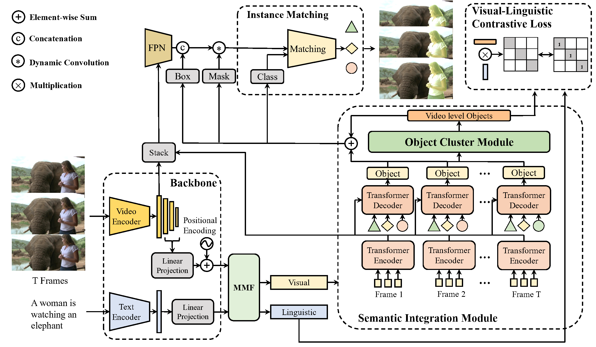
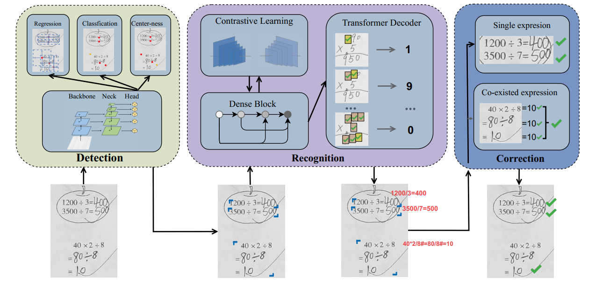
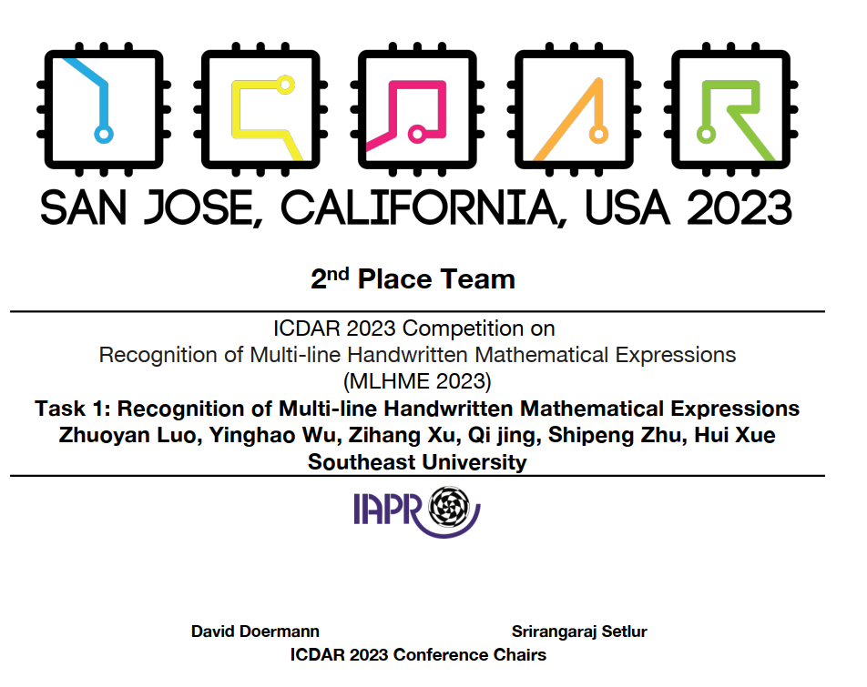

|
I am now a Senior student from Southeast University, majoring in Artificial Intelligence Currently, my supervisor is Prof.Xue. My research interests include Mathematical Expression Recognition and Video Segmentation. Now, I am accepted by Tsinghua University and supervised by Prof.Yang. |

|
|
[2023.09]The first prize of The 5th Large-scale Video Object Segmentation Challenge Track3: Referring Video Object Segmentation [2023.07]The paper FATE is accepted by the NCAA [2023.03]The second prize of ICDAR 2023 Multi-line Handwritten Mathematical Expression Recognition Competition [2022.11]The second prize of iFLYTEK A.I. HMER competition [2022.09]Obtain the Principal Scholarship [2022.06]A patent is accepted. Thanks for all help [2021.11]Obtain National Scholarship |
|  |
Zhuoyan Luo*, Yicheng Xiao*, Yong Liu*, Shuyan Li, Yitong Wang, Yansong Tang, Xiu Li, Yujiu Yang arxiv Preprint / paper |
|  |
Qipeng Zhu*,Zhuoyan Luo*, Shipeng Zhu*, Qi Jing, Zihang Xu, Hui Xue Accepted by Journal of NCAA (Neural Computing and Applications) / paper |

|
Zhuoyan Luo*, Yicheng Xiao*, Yong Liu*&Dagger, Yitong Wang, Yansong Tang, Xiu Li, Yujiu Yang. *equal contribution, ‡Project lead |
|  |
Zhuoyan Luo*, Yinghao Wu*, Zihang Xu, Qi Jing, Hui Xue |
|
Zhuoyan Luo*, Yinghao Wu* |
|
Updated at May. 2022
Thanks Jon Barron for this amazing template.
|